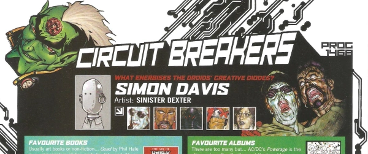

A short series of those quick-fire Q&A interviews with art & script droids that focus on favorites.
| Title | Parts | Pages | w indicates a wraparound coverCovers | Year(s) | Issues | Writer | Artist | Colourist | Letterer |
|---|---|---|---|---|---|---|---|---|---|
| Henry Flint | 1 | 1 | 0 | 2005 | 1443 | n/a | reprints & promos | <-- | n/a |
| Richard Elson | 1 | 1 | 0 | 2005 | 1445 | n/a | reprints & promos | <-- | n/a |
| Andrew Currie | 1 | 1 | 0 | 2005 | 1448 | n/a | reprints & promos | <-- | n/a |
| Ian Edginton | 1 | 1 | 0 | 2005 | 1465 | n/a | reprints & promos | <-- | n/a |
| John Smith | 1 | 1 | 0 | 2005 | 1466 | n/a | reprints & promos | <-- | n/a |
| Simon Davis | 1 | 0.5 | 0 | 2005 | 1468 | n/a | reprints & promos | <-- | n/a |
| year | episodes | pages |
| 1995 | 0 | 0 |
| 1996 | 0 | 0 |
| 1997 | 0 | 0 |
| 1998 | 0 | 0 |
| 1999 | 0 | 0 |
| 2000 | 0 | 0 |
| 2001 | 0 | 0 |
| 2002 | 0 | 0 |
| 2003 | 0 | 0 |
| 2004 | 0 | 0 |
| 2005 | 6 | 5.5 |
| 2006 | 0 | 0 |
| 2007 | 0 | 0 |
| 2008 | 0 | 0 |
| 2009 | 0 | 0 |
| 2010 | 0 | 0 |
| 2011 | 0 | 0 |
| 2012 | 0 | 0 |
| 2013 | 0 | 0 |
| 2014 | 0 | 0 |
| 2015 | 0 | 0 |